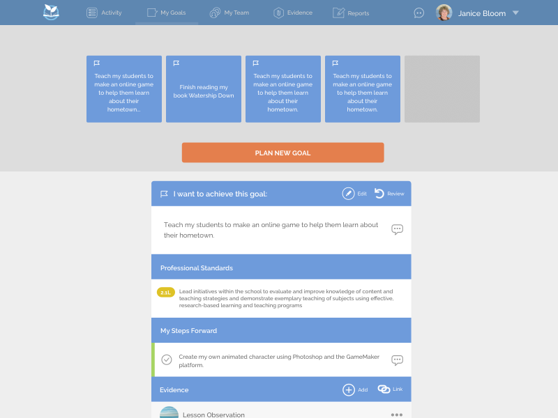

Momentum Cloud | Junior UI/UX Designer
I started working for Momentum Cloud when in November 2016. I took over a position of a Senior UX/UI designer which challenged me as I was fresh out of university and was my first job within UI/UX design. My role was focused on further designing features for a product called MyPLgoals.
Roles & responsibilities
- Showed management and problem solving skills when fixing unforeseen problems within the software.
- Showed traits of being a natural leader through clear communication with the managers and directing the development team.
- Processed a complex amount of information. Building features for MyPLgoals was a complicated, multi-dimensional task. I had to understand government procedures, discuss business models and know the user journey.
- Used Confluence to organise scope version control, where the team could see the deisgn process and mockups.
- Added culture by celebrating birthdays with a morning tea cake. Monthly Lunches together.
- Introduced new process by introduced InVision App for the UX process as well as a software called Zeplin for development, to close the gap between design and development.
- Became a clearer and stronger communicator to advocate my design ideas, thought process and research.
- Documented and communicated results, made recommendations, in which helped organise product roadmaps.
